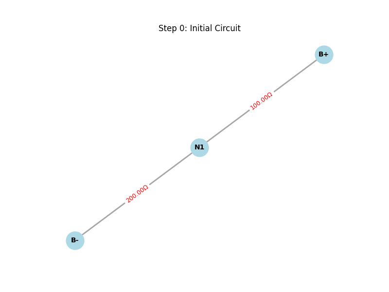
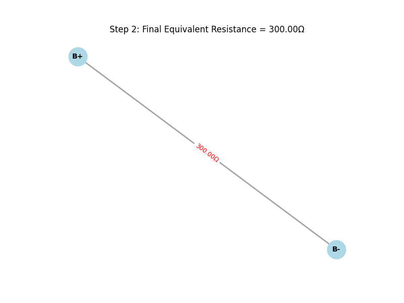

📘 Equivalent Resistance Using Graph Theory 🎯 Motivation Calculating the equivalent resistance in an electrical circuit is a fundamental task in electrical engineering and physics. While traditional methods rely on manually applying series and parallel rules, graph theory provides a more scalable solution for complex resistor networks.
By modeling circuits as graphs — where nodes represent junctions and edges represent resistors — we can automate the reduction process.
🧠 Algorithm Overview 🔹
Series Connection
If resistors are connected end-to-end:
Nodes: B+, N1, B-
Resistors:
Node1: B+
Node2: N1
Value: 100
Node1: N1
Node2: B-
Value: 200
The total equivalent resistance will be 300 Ω (since 100 + 200 = 300 in series).
phyton def _combine_series_threaded(self, G, step_count):
changed = False
nodes_to_remove = []
edges_to_add = []
r1_val = 0
r2_val = 0
for node in list(G.nodes()):
if G.degree(node) == 2 and node not in ("B+", "B-"):
neighbors = list(G.neighbors(node))
if len(neighbors) == 2:
u, v = neighbors[0], neighbors[1]
# u-v arasında doğrudan bağlantı yoksa
if G.number_of_edges(u, v) == 0:
edge1_data = G.get_edge_data(u, node)
edge2_data = G.get_edge_data(node, v)
r1_val = next(iter(edge1_data.values()))['resistance']
r2_val = next(iter(edge2_data.values()))['resistance']
R_new = r1_val + r2_val
nodes_to_remove.append(node)
edges_to_add.append((u, v, R_new, f"series_{step_count}_{node}"))
changed = True
break
if changed:
for node in nodes_to_remove:
G.remove_node(node)
for u, v, R_new, key in edges_to_add:
G.add_edge(u, v, resistance=R_new, key=key)
step_count += 1
self.update_status_signal.emit(f"Series combination: {u}-{nodes_to_remove[0]}-{v} combined. New resistance: {R_new:.2f}Ω")
self._draw_and_save_graph(G, f"Step {step_count}: Series {u}-{v} = {R_new:.2f}Ω ({r1_val:.2f}Ω + {r2_val:.2f}Ω)", step_count)
return step_count, changed
 
def parallel_circuit(*resistances):
inverse_sum = sum(1 / r for r in resistances)
return 1 / inverse_sum
🔄 Iterative Reduction Steps Identify and combine series-connected resistors.
Identify and combine parallel-connected resistors.
+ Repeat until one equivalent resistance remains.
▶ Example 2: Parallel
B+, B- B+ - B-: 100 Ω B+ - B-: 200 Ω
1 / Req = 1/100 + 1/200 → Req = 66.67 Ω
python
def _combine_parallel_threaded(self, G, step_count):
changed = False
edges_to_remove = []
edges_to_add = []
for u in list(G.nodes()):
for v in list(G.nodes()):
if u == v:
continue
if G.number_of_edges(u, v) > 1:
resistances = [data['resistance'] for key, data in G.get_edge_data(u, v).items()]
try:
inverse_sum = sum(1 / r for r in resistances if r != 0)
R_parallel = 1 / inverse_sum if inverse_sum != 0 else 0
except ZeroDivisionError:
R_parallel = 0
for key in list(G.get_edge_data(u, v).keys()):
edges_to_remove.append((u, v, key))
edges_to_add.append((u, v, R_parallel, f"parallel_{step_count}_{u}_{v}"))
changed = True
break
if changed:
break
if changed:
for u, v, key in edges_to_remove:
G.remove_edge(u, v, key)
for u, v, R_parallel, key in edges_to_add:
G.add_edge(u, v, resistance=R_parallel, key=key)
step_count += 1
self.update_status_signal.emit(f"Parallel combination: Resistors between {u}-{v} combined. New resistance: {R_parallel:.2f}Ω")
self._draw_and_save_graph(G, f"Step {step_count}: Parallel {u}-{v} = {R_parallel:.2f}Ω", step_count)
return step_count, changed
Example 3: Nested lua
A --2Ω--+--B--4Ω--+--C | | 3Ω 6Ω | | +--------+ Steps:
4Ω and 6Ω → parallel: 2.4Ω
Series: 3 + 2.4 = 5.4Ω
Total: 2 + 5.4 = 7.4Ω
📊 Time & Space Complexity Time: 𝑂(E)
Space: 𝑂(V + E)
🚀 Future Improvements Graph traversal (DFS/BFS)
Caching repeated subgraphs
GUI or interactive input